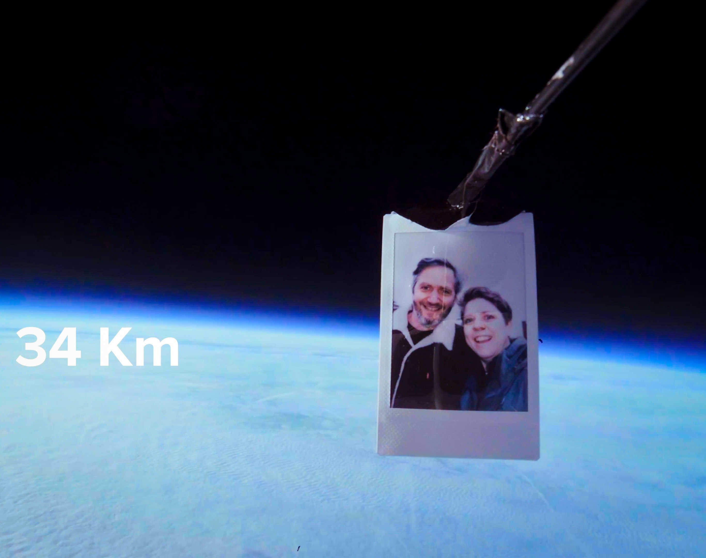
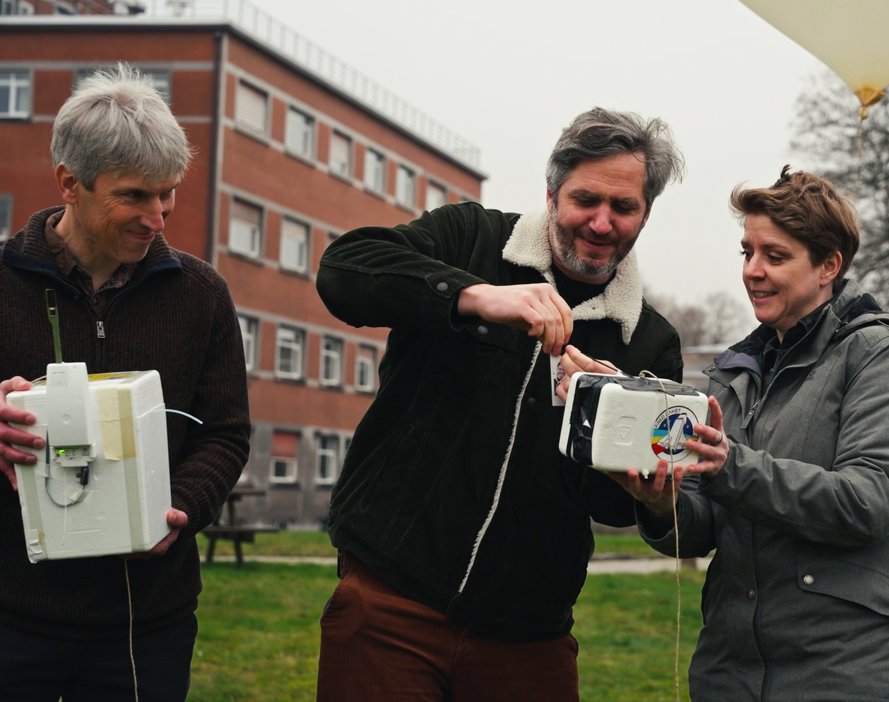
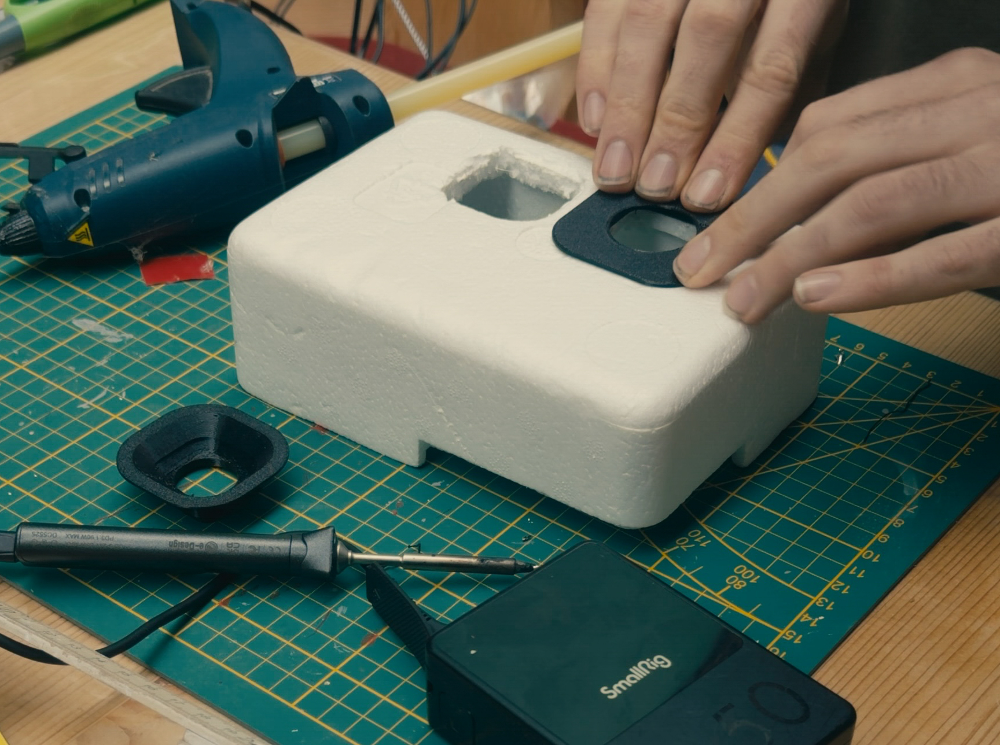
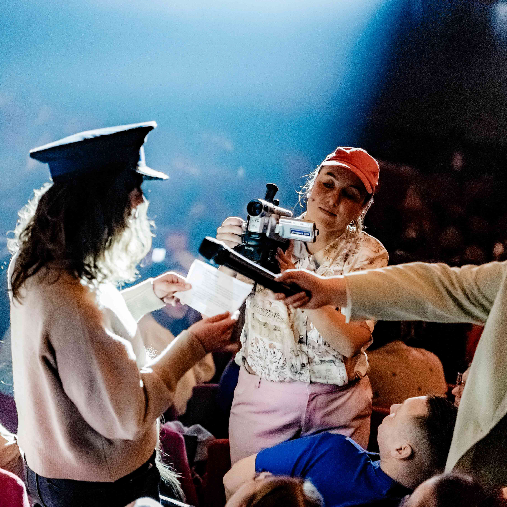
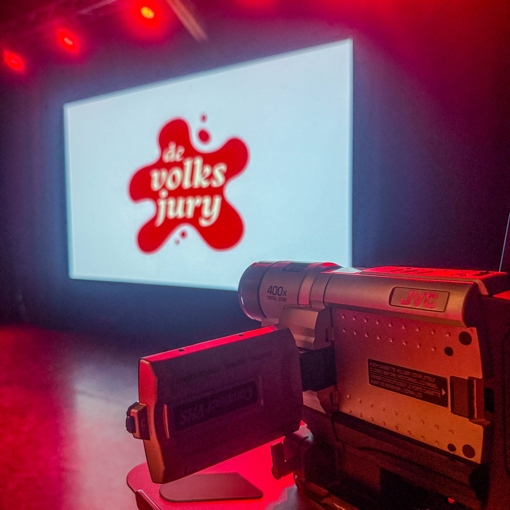
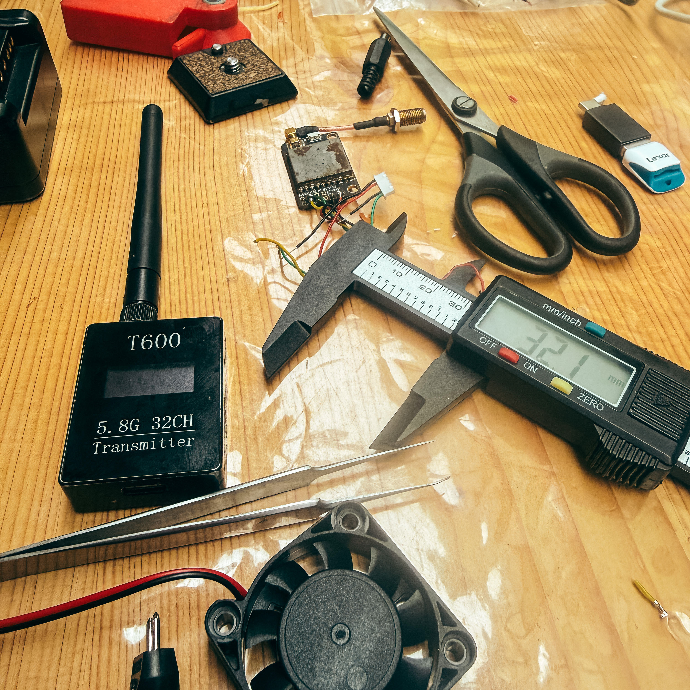

Maker
Projecten
Weerballon
Voor de zaalshow Nerdland voor Kleine Nerds bouwde ik een camerabehuizing voor een weerballonvlucht naar de stratosfeer. Het doel van die vlucht: een polaroidfoto van Hetty Helsmoortel en Lieven Scheire filmen op de rand van de ruimte.
Dat was een technische uitdaging van formaat: een behuizing voor twee GoPro's die vederlicht moest zijn en tegelijk bestand tegen extreme temperaturen, zodat ze kon meevliegen met de meetapparatuur van het KMI. De behuizing moest minder dan 500 gram wegen en heel blijven bij -80 graden op 34 kilometer hoogte. Dankzij extra isolatie, verwarming en aangepaste batterijen bleven beide camera's de volledige vlucht draaien. Mission accomplished!
Samenwerking met: Krew Collective en Working Class Heroes.



Wireless VHS-camera voor De Volksjury
Voor de liveshows van De Volksjury: A Nineties Murder bouwde ik samen met Krew Collective een draadloze VHS-camera. De uitdaging was om een kenmerkende, authentieke analoge look te behouden, terwijl het signaal betrouwbaar en zonder vertraging naar de grote schermen in de zaal ging.
Dat lukte dankzij de ervaring die ik opdeed met mijn FPV-drones. Die sturen hun beeld ook analoog door, en zo combineerde ik al eerder de klassieke look-and-feel van analoog beeld met een moderne filmtechniek: de First Person View-drone.


